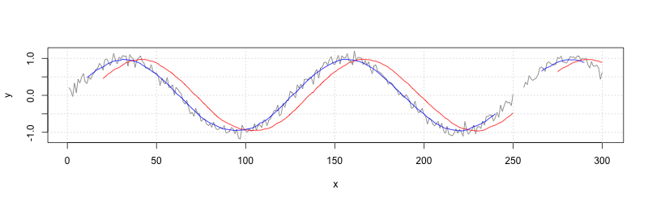
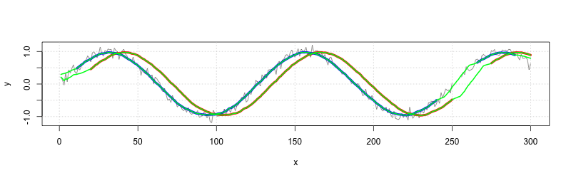

Calculating a moving average
Problem
You want to calculate a moving average.
Solution
Suppose your data is a noisy sine wave with some missing values:
set.seed(993) x <- 1:300 y <- sin(x/20) + rnorm(300,sd=.1) y[251:255] <- NA
The filter() function can be used to calculate a moving average.
# Plot the unsmoothed data (gray) plot(x, y, type="l", col=grey(.5)) # Draw gridlines grid() # Smoothed with lag: # average of current sample and 19 previous samples (red) f20 <- rep(1/20, 20) # [1] 0.05 0.05 0.05 0.05 0.05 0.05 0.05 0.05 0.05 0.05 0.05 0.05 0.05 0.05 0.05 #[16] 0.05 0.05 0.05 0.05 0.05 y_lag <- filter(y, f20, sides=1) lines(x, y_lag, col="red") # Smoothed symmetrically: # average of current sample, 10 future samples, and 10 past samples (blue) f21 <- rep(1/21,21) # [1] 0.048 0.048 0.048 0.048 0.048 0.048 0.048 0.048 0.048 0.048 0.048 0.048 #[13] 0.048 0.048 0.048 0.048 0.048 0.048 0.048 0.048 0.048 y_sym <- filter(y, f21, sides=2) lines(x, y_sym, col="blue")

filter() will leave holes wherever it encounters missing values, as shown in the graph above.
A different way to handle missing data is to simply ignore it, and not include it in the average. The function defined here will do that.
# x: the vector # n: the number of samples # centered: if FALSE, then average current sample and previous (n-1) samples # if TRUE, then average symmetrically in past and future. (If n is even, use one more sample from future.) movingAverage <- function(x, n=1, centered=FALSE) { if (centered) { before <- floor ((n-1)/2) after <- ceiling((n-1)/2) } else { before <- n-1 after <- 0 } # Track the sum and count of number of non-NA items s <- rep(0, length(x)) count <- rep(0, length(x)) # Add the centered data new <- x # Add to count list wherever there isn't a count <- count + !is.na(new) # Now replace NA_s with 0_s and add to total new[is.na(new)] <- 0 s <- s + new # Add the data from before i <- 1 while (i <= before) { # This is the vector with offset values to add new <- c(rep(NA, i), x[1:(length(x)-i)]) count <- count + !is.na(new) new[is.na(new)] <- 0 s <- s + new i <- i+1 } # Add the data from after i <- 1 while (i <= after) { # This is the vector with offset values to add new <- c(x[(i+1):length(x)], rep(NA, i)) count <- count + !is.na(new) new[is.na(new)] <- 0 s <- s + new i <- i+1 } # return sum divided by count s/count } # Make same plots from before, with thicker lines plot(x, y, type="l", col=grey(.5)) grid() y_lag <- filter(y, rep(1/20, 20), sides=1) lines(x, y_lag, col="red", lwd=4) # Lagged average in red y_sym <- filter(y, rep(1/21,21), sides=2) lines(x, y_sym, col="blue", lwd=4) # Symmetrical average in blue # Calculate lagged moving average with new method and overplot with green y_lag_na.rm <- movingAverage(y, 20) lines(x, y_lag_na.rm, col="green", lwd=2) # Calculate symmetrical moving average with new method and overplot with green y_sym_na.rm <- movingAverage(y, 21, TRUE) lines(x, y_sym_na.rm, col="green", lwd=2)
